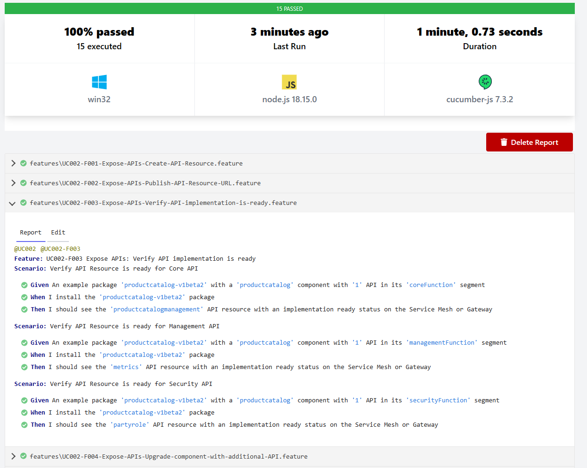

ODA Canvas Compliance Test Kit (CTK)
The compliance test kit for an ODA Canvas consists of:
BDD (Behaviour-Driven Development) features and scenarios that describe every interaction in each use-case using examples. The use-case library is at: usecase-library.
TDD (Test-Driven Development) that defines tests for each BDD scenario (embedded within each BDD).
This is WORK IN PROGRESS and the compliance test kit for an ODA Canvas implementation is not yet complete.
When you run the CTK (following the instructions in BDD (Behaviour-Driven Development) features and scenarios), a series of test are executed against the ODA Canvas implementation. The test results are reported in the console and in a HTML report. The console output is shown below:

And the cucumber report will look like this:

The original MVP canvas CTK is referenced below - the plan is to integrate this as level 1 of the CTK, with the BDD/TDD being level 2.
ODA Canvas - Phase 1 (MVP) CTK
For details of the work done in Phase 1 for a MVP of a Canvas CTK, see Phase 1 MVP Canvas CTK